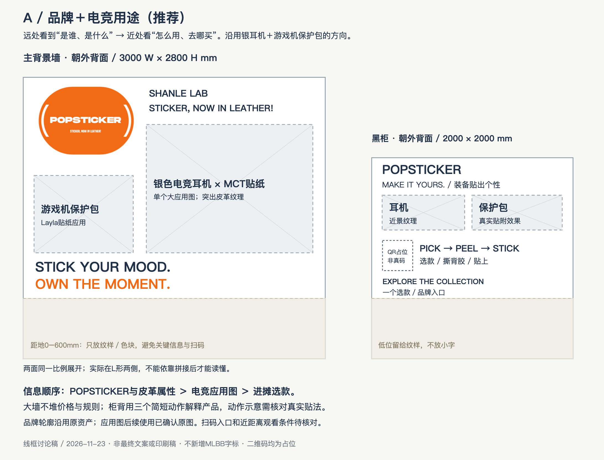
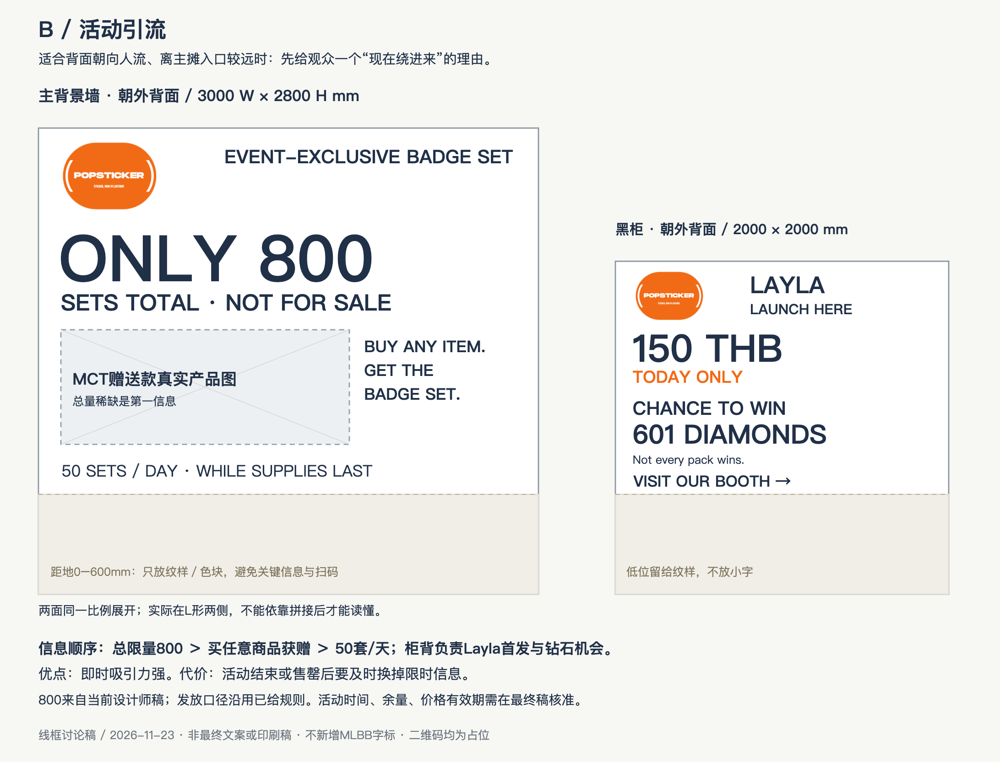
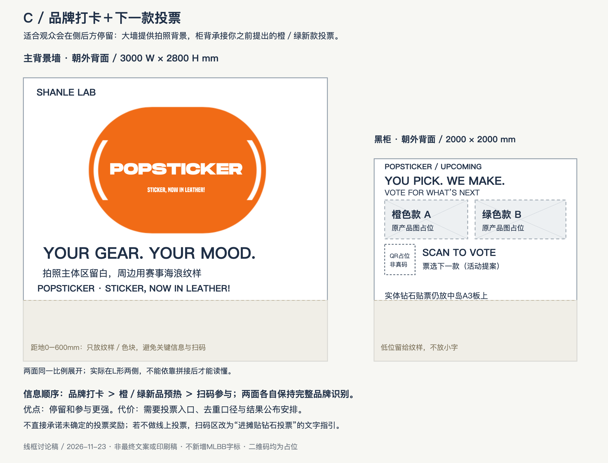

<!doctype html><html lang="zh-CN"><meta charset="utf-8"><meta name="viewport" content="width=device-width"><title>POPSTICKER 两块背面线框提案</title><style>body{margin:0;background:#e9e9e4;font:18px system-ui}main{max-width:1560px;margin:auto}img{width:100%;display:block;margin-bottom:24px}nav{padding:24px}a{margin-right:20px}</style><main><nav>两块背面 · 三组信息分工提案（未选定）</nav><a href="A-brand-use.svg"></a><a href="B-event-entry.svg"></a><a href="C-vote-photo.svg"></a></main></html>